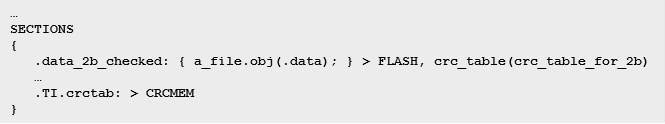
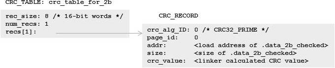
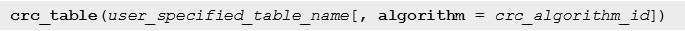
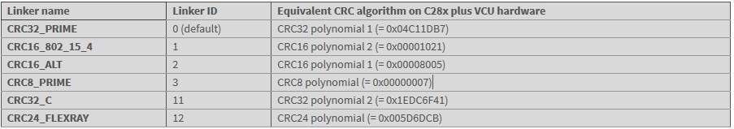
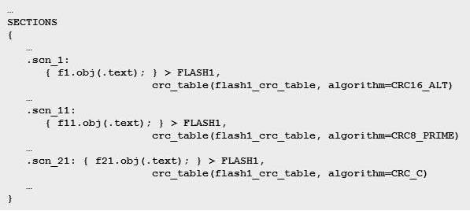
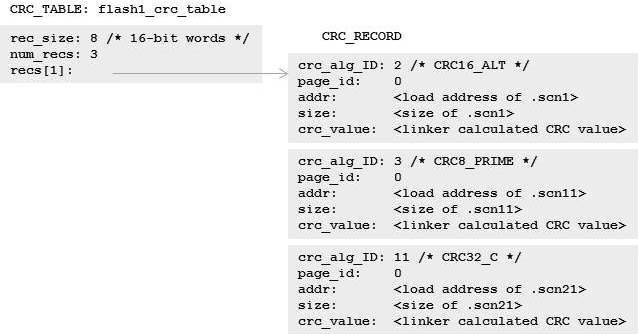
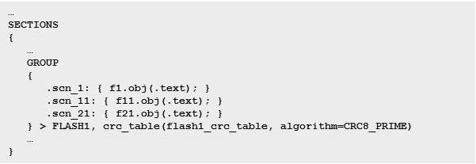
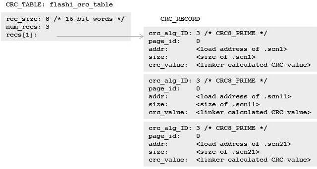
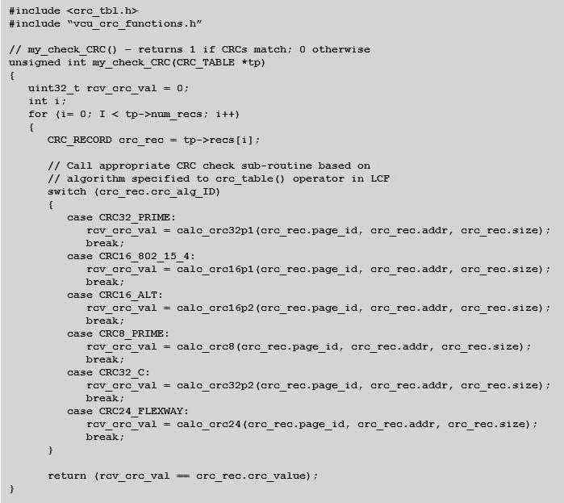
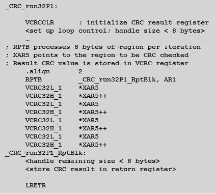

<!-- Start of markdown source -->
To verify code and/or data integrity, TI's microcontroller (MCU) Code-Generation Tools (CGTs), including the C2000 MCU CGT, the MSP430 MCU CGT and the TI ARM CGT, support cyclic redundancy checking (CRC). This method can greatly enhance the performance of your embedded design and is easy to use, once you understand the basics of how CRC works. The focus of this blog post will be CRC with the C2000 MCU CGT; for more detailed information about CRC with the MSP430 MCU CGT and ARM-based CGTs from TI, see the <i>Additional Resources</i> section below.
Designers use CRC to detect errors that might occur during data transmission. For a given section of code or data in an output file, the originator of the data - also known as the sender - applies a specific CRC algorithm to the content in that section to produce a CRC value, which is stored at a separate location in the output file. The consumer of the data - known as the receiver - knows what algorithm was applied to the section and can apply that same CRC algorithm to the code or data transmitted. If the CRC value computed by the receiver does not match the one computed by the sender, then the receiver may conclude that some error occurred during transmission and take appropriate action to address the problem, such as requesting that the sender retransmit the data.
You can check out a simple demonstration running on Code Composer Studio (CCS) software of how to perform CRC at run time using linker-generated CRC tables in the video, "Performing CRC with linker-generated CRC tables."
<iframe width="854" height="480" src="https://www.youtube.com/embed/1NgqmoukFes" frameborder="0" allowfullscreen></iframe>
###Linker-generated CRC tables###
The C2000 MCU linker supports an extension to the linker command file (LCF) syntax, the crc_table() operator, that generates a CRC value for a given initialized section of code or data. If a crc_table() operator is attached to the specification of a region (an output section, a GROUP, a GROUP member, a UNION or a UNION member), then the linker will compute a CRC value for that region and store that CRC value in target memory such that it is accessible at boot or run time.
Consider as an example a section of data that gets written to flash memory. Within the LCF, you would specify a crc_table() operator to be associated with the data section like this:

In the above snippet of the LCF, the crc_table() operator instructs the linker to generate a CRC table data object called crc_table_for_2b. Using the C2000 MCU linker, this would result in a data object that looks like this:

The crc_tbl.h file located in the Include subdirectory where your C2000 MCU CGT is installed provides the formal specification of the CRC_TABLE and CRC_RECORD data structures. CRC_TABLE is a header for a vector of one or more CRC_RECORDs. Besides the location and size of the region of memory to check, each CRC_RECORD also identifies the CRC algorithm applied to that memory region to arrive at the "crc_value." By default, when a user specifies a crc_table() operator with a single argument, the C2000 MCU linker will use what it refers to as the CRC32_PRIME algorithm. This corresponds to the CRC32 polynomial 1 (= 0x04C11DB7) CRC algorithm that C28x plus Viterbi, complex math and CRC unit (C28x+VCU) devices support in hardware. However, the linker also allows users to select a different CRC algorithm as a second argument to the crc_table() operator.
The complete syntax for the crc_table() operator is:

The C2000 MCU linker recognizes the values in Table 1 as valid crc_algorithm_id arguments. You can specify either the linker name or linker ID.

As you will see later, it is critical that the CRC algorithm selected at link time to compute the CRC value for a region is the same CRC algorithm that the application uses to CRC the region at run time.
###Generating a single CRC table for multiple regions###
Before discussing how to do an actual CRC on a region at run time, let's consider another LCF example in which a single CRC table can check multiple regions. There are two ways to create a single CRC table that applies to multiple regions. In crc_ex1.cmd, the crc_table() operator is applied to multiple output sections using the same user_specified_table_name argument for each section:

In this case, the linker generates a single CRC_TABLE data object, flash1_crc_table, that contains three CRC_RECORDs, one for each of the output sections to which a crc_table() operator was attached:

By collecting all three CRC_RECORDs into the same table, your application can perform CRC on all three output sections simultaneously by passing the address of the CRC_TABLE, flash1_crc_table, to the CRC routine.
Using separate crc_table() operators for each output section has a couple of benefits:
You can indicate a separate CRC algorithm for each output section.
The memory placement of each output section is independent from the other output sections that will be checked via the CRC_TABLE.
This snippet of crc_ex2.cmd shows how the application of a crc_table() operator to a GROUP specification creates a single CRC_TABLE, flash1_crc_table, for the three output section members of the GROUP:

Like the previous LCF example, the linker will create a single CRC_TABLE, flash1_crc_table, containing a vector of three CRC_RECORDs, one for each member of the GROUP:

The linker must create a separate CRC_RECORD for each member of the GROUP because there may be gaps between members of the GROUP containing unknown values. As in the previous LCF example, because the CRC table includes all three output sections, a CRC on all three of the output sections can happen at the same time.
While the crc_ex2.cmd example only requires a single crc_table() operator specification, there are a couple of caveats associated with applying a crc_table() operator to a GROUP:
- You can only indicate one CRC algorithm, which will be used for CRC on each output section represented in the CRC table.
- The memory placement of the output section members of the GROUP is ordered and contiguous according to the placement instructions attached to the GROUP.
###How to perform CRC at run time###
Now that you know how to get the linker to generate a CRC_TABLE data object for one or more regions on which you want to perform CRC at run time, you will need to include a software routine in your application that can read and process a CRC_TABLE to perform the actual CRC. Below is an example of a function, my_check_CRC(), that can read and process a linker-generated CRC_TABLE data object:

In this example function, the crc_tbl.h header file provides declarations for the CRC_TABLE and CRC_RECORD data structures, along with definitions of the available CRC algorithm IDs. Assume that the declarations of the calc_crcXXXX() functions are available in vcu_crc_functions.h. The CRC algorithm ID from each CRC_RECORD tells the run-time application which CRC algorithm function to call. As I mentioned earlier, the C2000 MCU linker allows you to specify one of six different CRC algorithms to use in calculating the CRC value. For example, if a CRC_RECORD identifies the CRC32_PRIME algorithm for a given region of memory, then the calc_crc32p1() function is called. The application will need to supply the calc_crc32p1() function definition. If no hardware support for CRC is available, then the algorithm can be computed in a C function. However, if the application is running on a C28x+VCU device, then the calc_crc32p1() function can use the special CRC instructions available on the device to calculate the CRC value so that it matches the crc_value stored in the CRC_RECORD.
The core of such a calc_crc32p1() function is a repeat block (RPTB) loop that spins through the memory region to be checked and uses the VCRC32L_1 and VCRC32H_1 instructions to calculate the CRC value for the region using the CRC32 polynomial 1:

You can find full examples using the CRC hardware support on C28x+VCU devices in the [controlSUITE](https://www.ti.com/tool/controlsuite) software package, accessible from the controlSUITE software download page on TI.com. If you have CCS installed, you can also access the controlSUITE software package from the CCS App Center. The controlSUITE software package contains example CCS projects that demonstrate the use of linker-generated CRC tables. Assembly language source is provided for functions that use CRC hardware support on C28x+VCU devices to calculate CRC values (look in the directory where you have controlSUITE software installed at controlSUITE/libs/dsp/VCU).
###Additional resources###
To learn more about linker-generated CRC tables in the C2000 MCU CGTs, see Section 8.9 and the appendix of the "[TMS320C28x Assembly Language Tools User's Guide](https://downloads.ti.com/docs/esd/SPRU513/)."
- Chapter 2 of the "[TMS320C28x Extended Instruction Sets Technical Reference Manual](https://www.ti.com/lit/ug/spruhs1a/spruhs1a.pdf)" discusses hardware support for CRC in C28x+VCU devices.
- To learn more about linker-generated CRC tables in MSP430 MCU CGTs, see Section 8.9 and the appendix of the "[MSP430 Assembly Language Tools User's Guide](https://downloads.ti.com/docs/esd/SLAU131/)."
- To learn more about linker-generated CRC tables in TI ARM CGTs, see Section 8.9 of "[ARM Assembly Language Tools v16.12.0.STS User's Guide](https://downloads.ti.com/docs/esd/SPNU118/)."
<!-- End of markdown source -->
<div id="footer"></div>